기초단계
library(forecast)
## Registered S3 method overwritten by 'quantmod':
## method from
## as.zoo.data.frame zoo
AR(1)생성하기
x<-arima.sim(list(ma=0.2), n=100)
ts.plot(x, main="x")
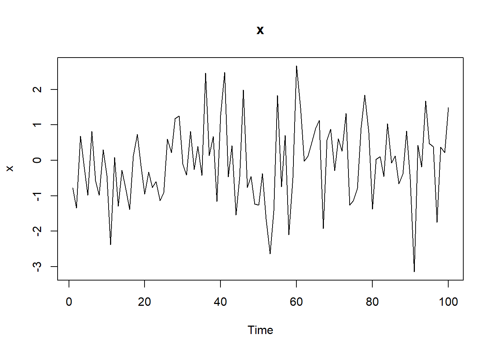
par(mfrow=c(3,1))
acf(x, main="ACF")
pacf(x, main="PACF")
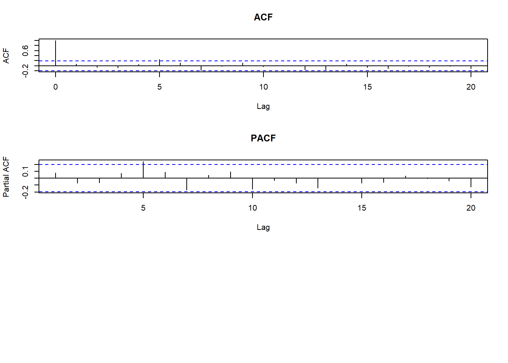
MA(1)생성하기
x<-arima.sim(list(ma=0.8), n=100)
ts.plot(x, main="x")
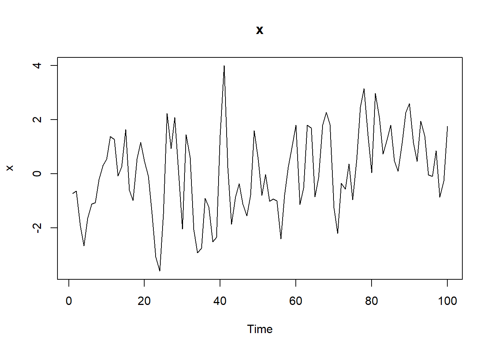
par(mfrow=c(3,1))
acf(x, main="ACF ")
pacf(x, main="PACF ")
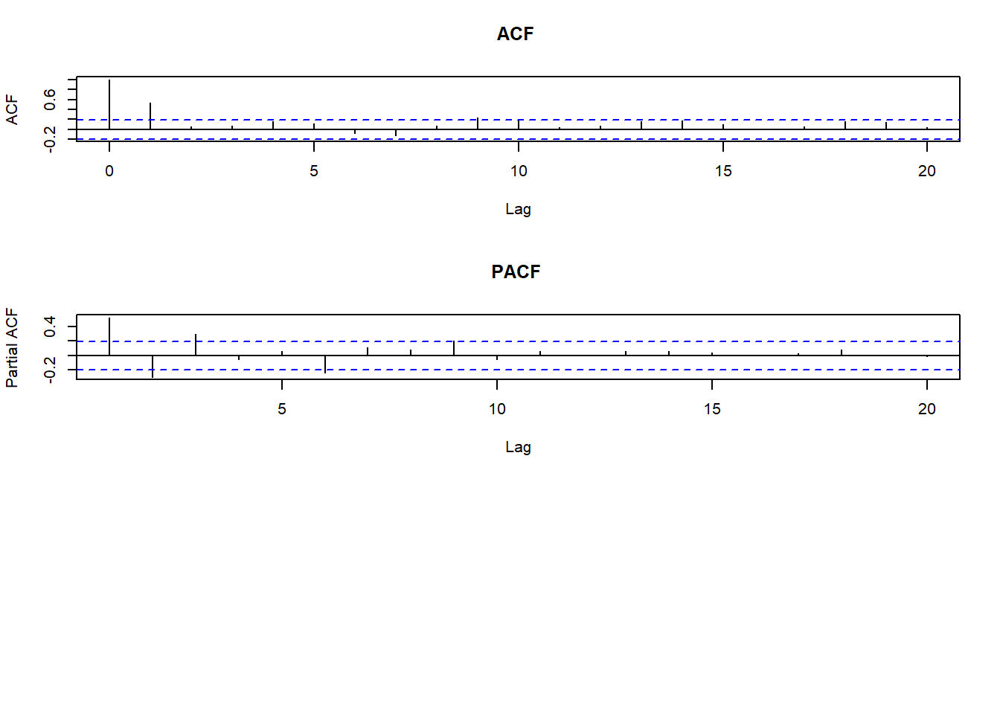
ARMA(1,1)생성하기
x<-arima.sim(list(ar=0.4, ma=-0.3), n=100)
ts.plot(x, main="x")
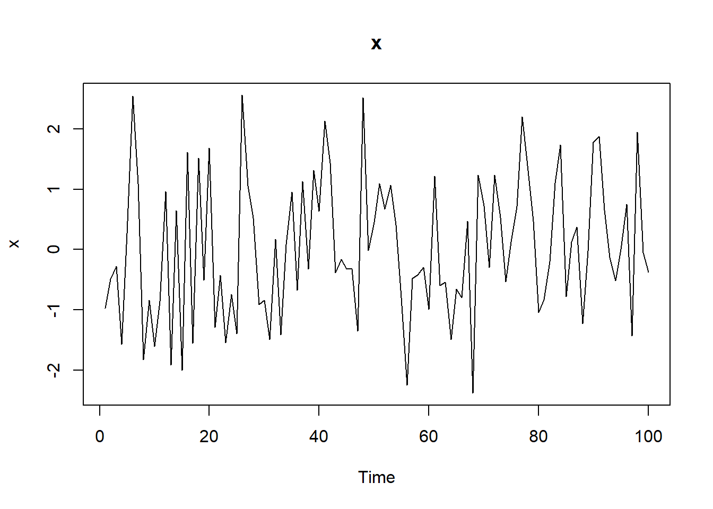
par(mfrow=c(3,1))
acf(x, main="ACF ")
pacf(x, main="PACF ")
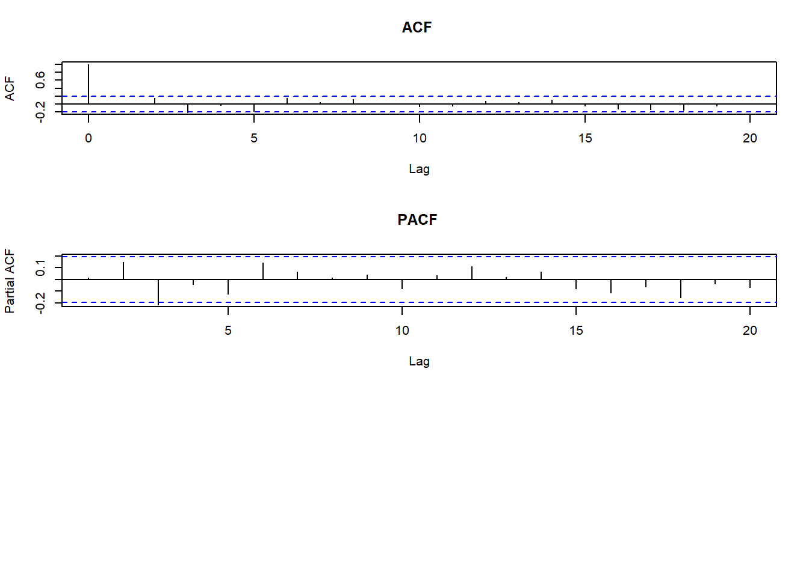
실습
Y<-arima.sim(list(order=c(2,0,0), ar=c(0.3, 0.1)), n=100)
모형 식별하기
ts.plot(Y)
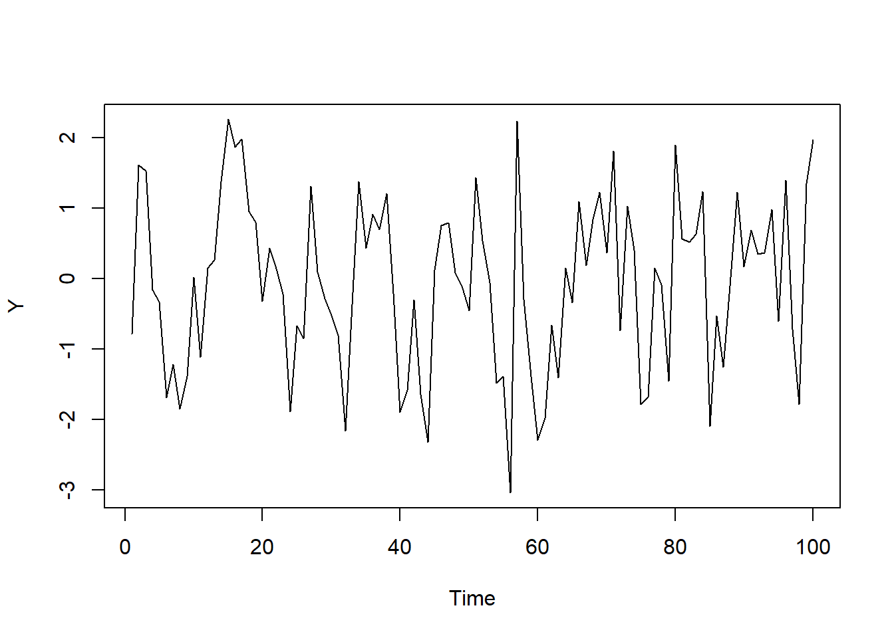
par(mfrow=c(2,1))
acf(Y, main="ACF ")
pacf(Y, main="PACF ")
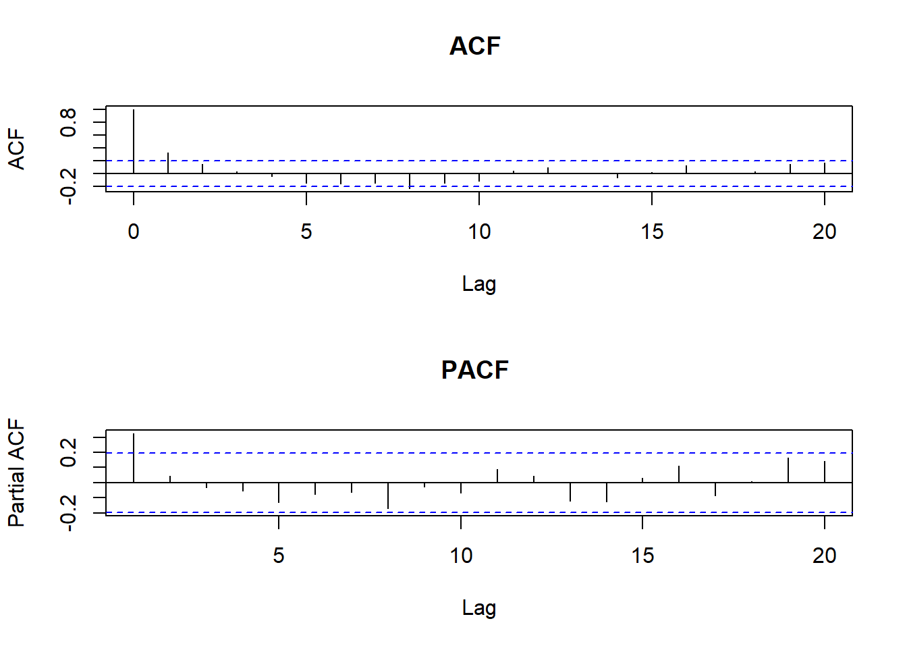
## 모수 추정해보기
TS1 <- arima(Y, c(2, 0, 0))
TS1
##
## Call:
## arima(x = Y, order = c(2, 0, 0))
##
## Coefficients:
## ar1 ar2 intercept
## 0.3188 0.0459 -0.0521
## s.e. 0.1009 0.1023 0.1770
##
## sigma^2 estimated as 1.278: log likelihood = -154.23, aic = 316.46
TS1 <- arima(Y, c(2, 0, 0), method=c("CSS-ML"))
TS1
##
## Call:
## arima(x = Y, order = c(2, 0, 0), method = c("CSS-ML"))
##
## Coefficients:
## ar1 ar2 intercept
## 0.3188 0.0459 -0.0521
## s.e. 0.1009 0.1023 0.1770
##
## sigma^2 estimated as 1.278: log likelihood = -154.23, aic = 316.46
TS1 <- arima(Y, c(2, 0, 0), method=c("ML"))
TS1
##
## Call:
## arima(x = Y, order = c(2, 0, 0), method = c("ML"))
##
## Coefficients:
## ar1 ar2 intercept
## 0.3188 0.0459 -0.0521
## s.e. 0.1009 0.1023 0.1770
##
## sigma^2 estimated as 1.278: log likelihood = -154.23, aic = 316.46
TS1 <- arima(Y, c(2, 0, 0), method=c("CSS"))
TS1
##
## Call:
## arima(x = Y, order = c(2, 0, 0), method = c("CSS"))
##
## Coefficients:
## ar1 ar2 intercept
## 0.3316 0.0453 -0.0676
## s.e. 0.0994 0.1000 0.1804
##
## sigma^2 estimated as 1.262: log likelihood = -153.54, aic = NA
모형 진단해보기
tsdiag(TS1, gof.lag=14)
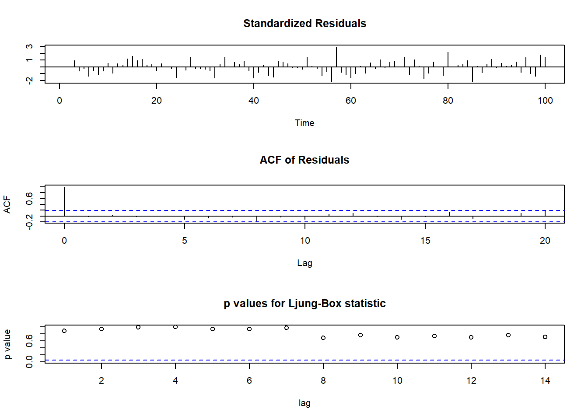
## 모형 예측하기
future10<-predict(TS1, n.ahead=10)
future10
## $pred
## Time Series:
## Start = 101
## End = 110
## Frequency = 1
## [1] 0.671882170 0.269758897 0.077704918 -0.004176927 -0.040019880
## [6] -0.055610750 -0.062402662 -0.065360384 -0.066648515 -0.067209504
##
## $se
## Time Series:
## Start = 101
## End = 110
## Frequency = 1
## [1] 1.123528 1.183682 1.196458 1.198787 1.199231 1.199316 1.199332 1.199335
## [9] 1.199335 1.199335
Upper<-future10$pred+future10$se
Lower<-future10$pred-future10$se
Upper
## Time Series:
## Start = 101
## End = 110
## Frequency = 1
## [1] 1.795411 1.453441 1.274163 1.194610 1.159212 1.143705 1.136929 1.133974
## [9] 1.132687 1.132126
Lower
## Time Series:
## Start = 101
## End = 110
## Frequency = 1
## [1] -0.4516463 -0.9139235 -1.1187533 -1.2029637 -1.2392513 -1.2549263
## [7] -1.2617342 -1.2646950 -1.2659837 -1.2665448
forecast(TS1,h=10)
## Point Forecast Lo 80 Hi 80 Lo 95 Hi 95
## 101 0.671882170 -0.7679774 2.111742 -1.530193 2.873957
## 102 0.269758897 -1.2471911 1.786709 -2.050216 2.589734
## 103 0.077704918 -1.4556179 1.611028 -2.267310 2.422720
## 104 -0.004176927 -1.5404839 1.532130 -2.353756 2.345402
## 105 -0.040019880 -1.5768968 1.496857 -2.390470 2.310431
## 106 -0.055610750 -1.5925955 1.481374 -2.406226 2.295005
## 107 -0.062402662 -1.5994079 1.474603 -2.413049 2.288244
## 108 -0.065360384 -1.6023695 1.471649 -2.416013 2.285292
## 109 -0.066648515 -1.6036584 1.470361 -2.417302 2.284005
## 110 -0.067209504 -1.6042195 1.469801 -2.417863 2.283444
plot(forecast(TS1,h=10))
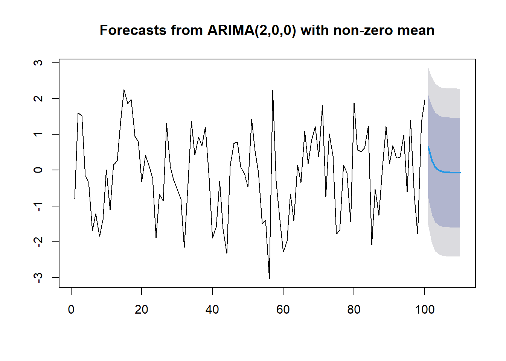
차수 식별
auto.arima(Y)
## Series: Y
## ARIMA(1,0,0) with zero mean
##
## Coefficients:
## ar1
## 0.3358
## s.e. 0.0951
##
## sigma^2 estimated as 1.295: log likelihood=-154.39
## AIC=312.77 AICc=312.89 BIC=317.98
실습2
x<-arima.sim(list(ma=0.7), n=100)
par(mfrow=c(2,1))
acf(x, main="ACF ")
pacf(x, main="PACF ")
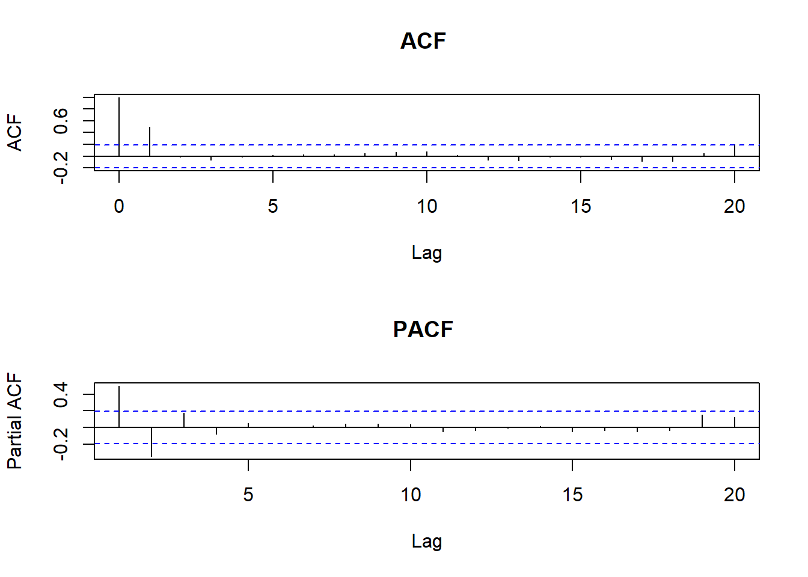
모수 추정하기
TS2 <- arima(x, c(0, 0, 1))
TS2
##
## Call:
## arima(x = x, order = c(0, 0, 1))
##
## Coefficients:
## ma1 intercept
## 0.7135 0.1634
## s.e. 0.0612 0.1799
##
## sigma^2 estimated as 1.111: log likelihood = -147.52, aic = 301.04
auto.arima(x)
## Series: x
## ARIMA(0,0,1) with zero mean
##
## Coefficients:
## ma1
## 0.7154
## s.e. 0.0608
##
## sigma^2 estimated as 1.132: log likelihood=-147.93
## AIC=299.86 AICc=299.98 BIC=305.07
모형의 진단
tsdiag(TS2,gof.lag=20)
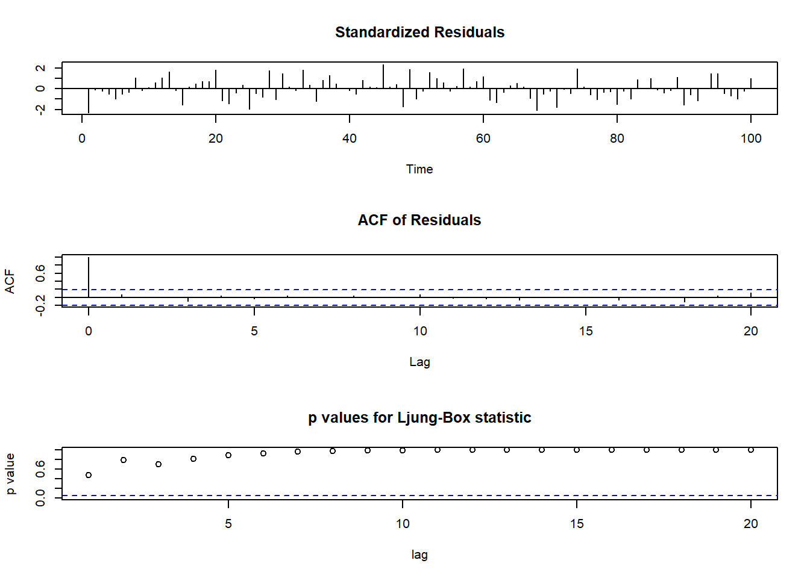
모형의 예측
future20<-predict(TS2, n.ahead=20)
future20
## $pred
## Time Series:
## Start = 101
## End = 120
## Frequency = 1
## [1] 0.9040572 0.1634215 0.1634215 0.1634215 0.1634215 0.1634215 0.1634215
## [8] 0.1634215 0.1634215 0.1634215 0.1634215 0.1634215 0.1634215 0.1634215
## [15] 0.1634215 0.1634215 0.1634215 0.1634215 0.1634215 0.1634215
##
## $se
## Time Series:
## Start = 101
## End = 120
## Frequency = 1
## [1] 1.054105 1.294901 1.294901 1.294901 1.294901 1.294901 1.294901 1.294901
## [9] 1.294901 1.294901 1.294901 1.294901 1.294901 1.294901 1.294901 1.294901
## [17] 1.294901 1.294901 1.294901 1.294901
Upper <- future20$pred+future20$se
Lower <- future20$pred-future20$se
Upper
## Time Series:
## Start = 101
## End = 120
## Frequency = 1
## [1] 1.958162 1.458322 1.458322 1.458322 1.458322 1.458322 1.458322 1.458322
## [9] 1.458322 1.458322 1.458322 1.458322 1.458322 1.458322 1.458322 1.458322
## [17] 1.458322 1.458322 1.458322 1.458322
Lower
## Time Series:
## Start = 101
## End = 120
## Frequency = 1
## [1] -0.1500477 -1.1314791 -1.1314791 -1.1314791 -1.1314791 -1.1314791
## [7] -1.1314791 -1.1314791 -1.1314791 -1.1314791 -1.1314791 -1.1314791
## [13] -1.1314791 -1.1314791 -1.1314791 -1.1314791 -1.1314791 -1.1314791
## [19] -1.1314791 -1.1314791
forecast(TS2,h=20)
## Point Forecast Lo 80 Hi 80 Lo 95 Hi 95
## 101 0.9040572 -0.4468325 2.254947 -1.161950 2.970065
## 102 0.1634215 -1.4960604 1.822903 -2.374537 2.701380
## 103 0.1634215 -1.4960604 1.822903 -2.374537 2.701380
## 104 0.1634215 -1.4960604 1.822903 -2.374537 2.701380
## 105 0.1634215 -1.4960604 1.822903 -2.374537 2.701380
## 106 0.1634215 -1.4960604 1.822903 -2.374537 2.701380
## 107 0.1634215 -1.4960604 1.822903 -2.374537 2.701380
## 108 0.1634215 -1.4960604 1.822903 -2.374537 2.701380
## 109 0.1634215 -1.4960604 1.822903 -2.374537 2.701380
## 110 0.1634215 -1.4960604 1.822903 -2.374537 2.701380
## 111 0.1634215 -1.4960604 1.822903 -2.374537 2.701380
## 112 0.1634215 -1.4960604 1.822903 -2.374537 2.701380
## 113 0.1634215 -1.4960604 1.822903 -2.374537 2.701380
## 114 0.1634215 -1.4960604 1.822903 -2.374537 2.701380
## 115 0.1634215 -1.4960604 1.822903 -2.374537 2.701380
## 116 0.1634215 -1.4960604 1.822903 -2.374537 2.701380
## 117 0.1634215 -1.4960604 1.822903 -2.374537 2.701380
## 118 0.1634215 -1.4960604 1.822903 -2.374537 2.701380
## 119 0.1634215 -1.4960604 1.822903 -2.374537 2.701380
## 120 0.1634215 -1.4960604 1.822903 -2.374537 2.701380
plot(forecast(TS2,h=20))
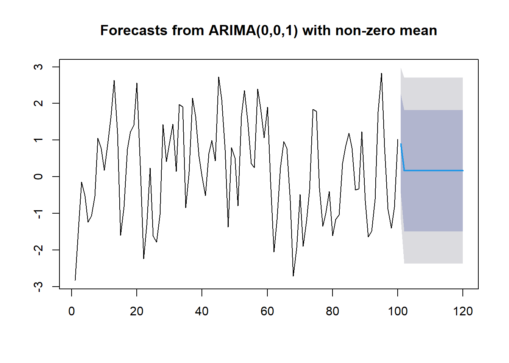
실습3
ARMA<-arima.sim(list(ar=0.3, ma=0.7), n=100)
ts.plot(ARMA)
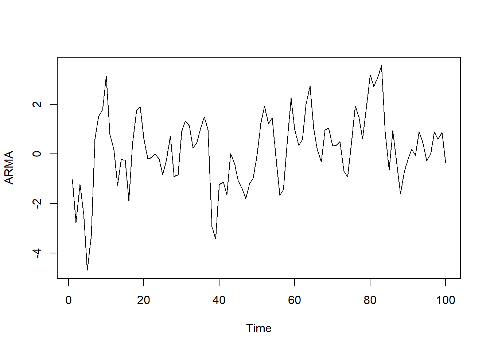
par(mfrow=c(1,2))
acf(ARMA)
pacf(ARMA)
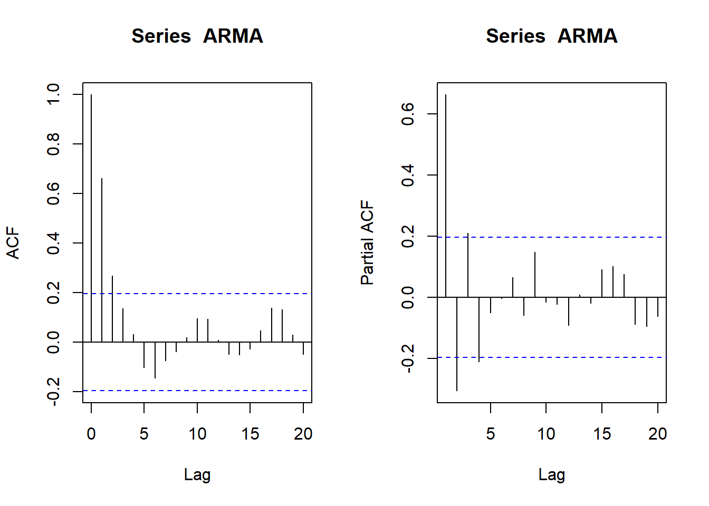
arm1 <- arima(ARMA, c(0, 0, 2))
arm1
##
## Call:
## arima(x = ARMA, order = c(0, 0, 2))
##
## Coefficients:
## ma1 ma2 intercept
## 0.9791 0.2155 0.1529
## s.e. 0.0911 0.1108 0.2199
##
## sigma^2 estimated as 1.017: log likelihood = -143.31, aic = 294.62
arm2 <- arima(ARMA, c(1, 0, 1))
arm2
##
## Call:
## arima(x = ARMA, order = c(1, 0, 1))
##
## Coefficients:
## ar1 ma1 intercept
## 0.3169 0.7013 0.1489
## s.e. 0.1282 0.1228 0.2471
##
## sigma^2 estimated as 1.002: log likelihood = -142.56, aic = 293.13
summary(arm1)
##
## Call:
## arima(x = ARMA, order = c(0, 0, 2))
##
## Coefficients:
## ma1 ma2 intercept
## 0.9791 0.2155 0.1529
## s.e. 0.0911 0.1108 0.2199
##
## sigma^2 estimated as 1.017: log likelihood = -143.31, aic = 294.62
##
## Training set error measures:
## ME RMSE MAE MPE MAPE MASE
## Training set -0.001897963 1.008491 0.797124 899.0219 949.4286 0.8411539
## ACF1
## Training set 0.03081721
auto.arima(ARMA)
## Series: ARMA
## ARIMA(1,0,1) with zero mean
##
## Coefficients:
## ar1 ma1
## 0.3238 0.6987
## s.e. 0.1278 0.1235
##
## sigma^2 estimated as 1.026: log likelihood=-142.74
## AIC=291.48 AICc=291.73 BIC=299.3
tsdiag(arm1,gof.lag=36)
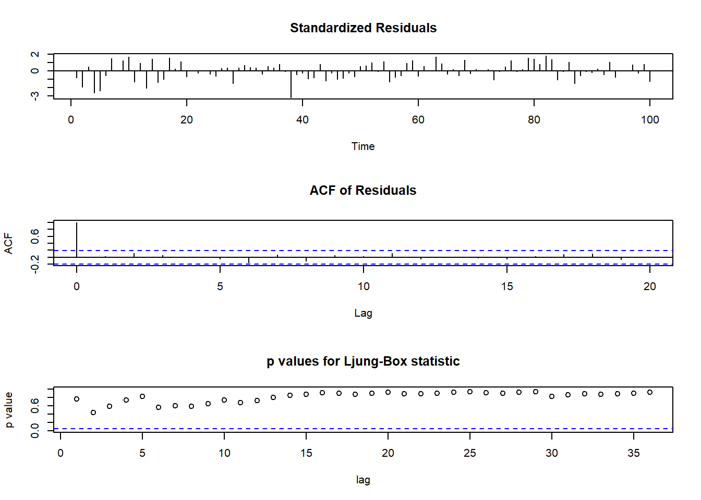
forecast(arm1,h=20)
## Point Forecast Lo 80 Hi 80 Lo 95 Hi 95
## 101 -0.8965599 -2.188993 0.3958732 -2.873166 1.080046
## 102 -0.1167588 -1.925500 1.6919824 -2.882990 2.649472
## 103 0.1529145 -1.677153 1.9829819 -2.645932 2.951761
## 104 0.1529145 -1.677153 1.9829819 -2.645932 2.951761
## 105 0.1529145 -1.677153 1.9829819 -2.645932 2.951761
## 106 0.1529145 -1.677153 1.9829819 -2.645932 2.951761
## 107 0.1529145 -1.677153 1.9829819 -2.645932 2.951761
## 108 0.1529145 -1.677153 1.9829819 -2.645932 2.951761
## 109 0.1529145 -1.677153 1.9829819 -2.645932 2.951761
## 110 0.1529145 -1.677153 1.9829819 -2.645932 2.951761
## 111 0.1529145 -1.677153 1.9829819 -2.645932 2.951761
## 112 0.1529145 -1.677153 1.9829819 -2.645932 2.951761
## 113 0.1529145 -1.677153 1.9829819 -2.645932 2.951761
## 114 0.1529145 -1.677153 1.9829819 -2.645932 2.951761
## 115 0.1529145 -1.677153 1.9829819 -2.645932 2.951761
## 116 0.1529145 -1.677153 1.9829819 -2.645932 2.951761
## 117 0.1529145 -1.677153 1.9829819 -2.645932 2.951761
## 118 0.1529145 -1.677153 1.9829819 -2.645932 2.951761
## 119 0.1529145 -1.677153 1.9829819 -2.645932 2.951761
## 120 0.1529145 -1.677153 1.9829819 -2.645932 2.951761
plot(forecast(arm2,h=20))
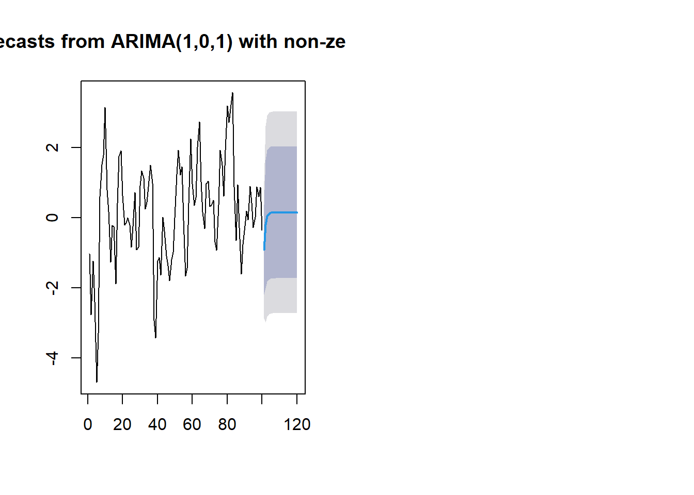
실습4
AirPassengers
## Jan Feb Mar Apr May Jun Jul Aug Sep Oct Nov Dec
## 1949 112 118 132 129 121 135 148 148 136 119 104 118
## 1950 115 126 141 135 125 149 170 170 158 133 114 140
## 1951 145 150 178 163 172 178 199 199 184 162 146 166
## 1952 171 180 193 181 183 218 230 242 209 191 172 194
## 1953 196 196 236 235 229 243 264 272 237 211 180 201
## 1954 204 188 235 227 234 264 302 293 259 229 203 229
## 1955 242 233 267 269 270 315 364 347 312 274 237 278
## 1956 284 277 317 313 318 374 413 405 355 306 271 306
## 1957 315 301 356 348 355 422 465 467 404 347 305 336
## 1958 340 318 362 348 363 435 491 505 404 359 310 337
## 1959 360 342 406 396 420 472 548 559 463 407 362 405
## 1960 417 391 419 461 472 535 622 606 508 461 390 432
plot(AirPassengers) #시도표 그리기

plot(stl(AirPassengers, s.window="periodic"))
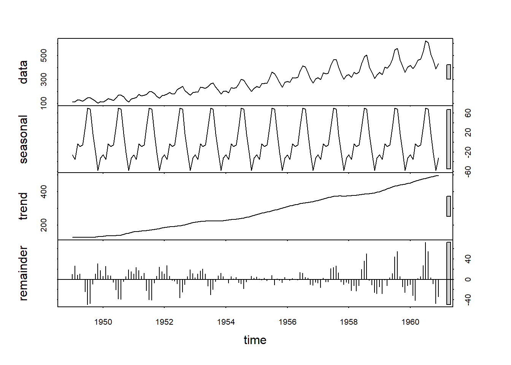
logair<-log(AirPassengers) #분산안정화를 위해 log변환시킴
plot(logair)
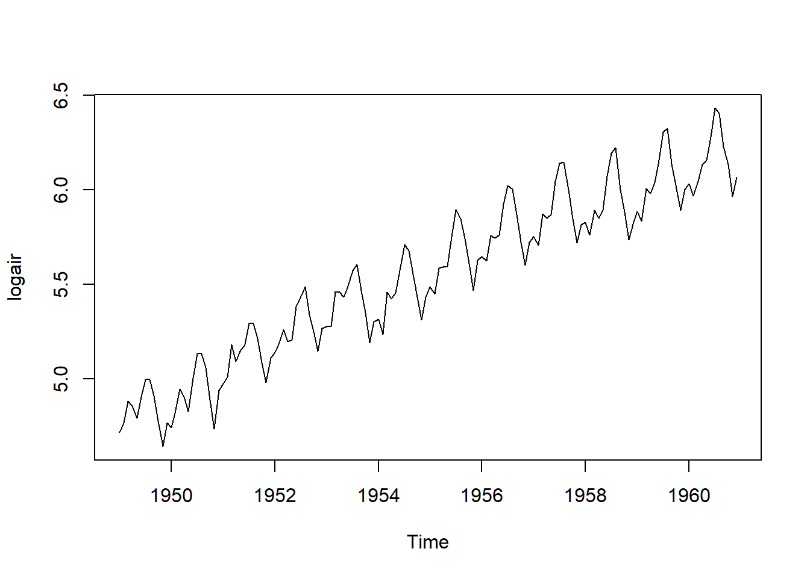
log_diff1_air<-diff(logair) #1차분시도
plot(log_diff1_air)
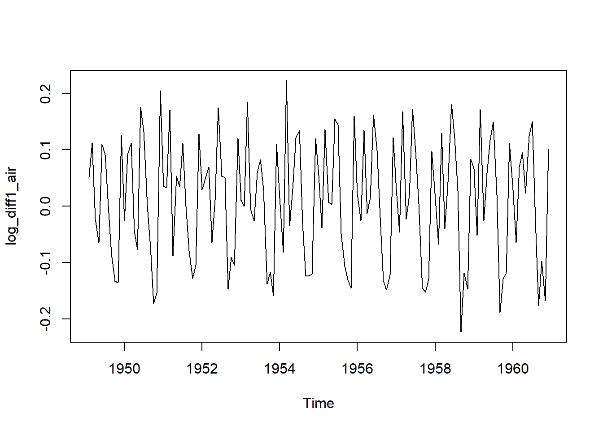
plot(stl(log_diff1_air, s.window="periodic"))
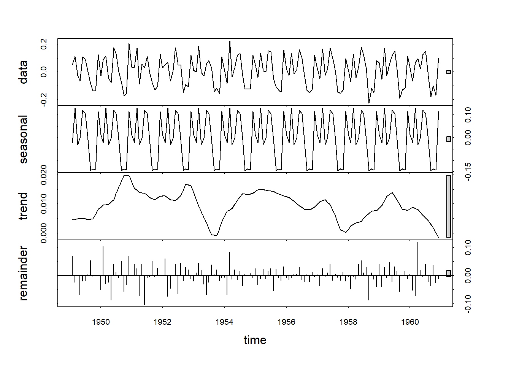
log_diff12_air<-diff(log_diff1_air, differences=12) #계절차분시도
plot(log_diff12_air)
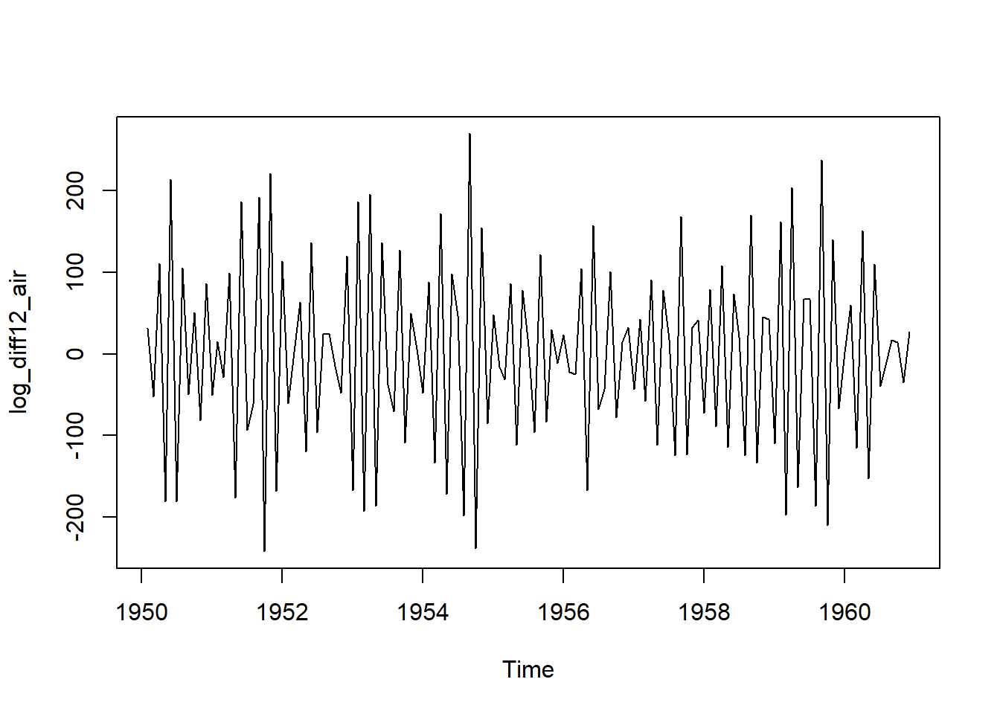
par(mfrow=c(2,1))
acf(log_diff12_air,main="ACF" )
pacf(log_diff12_air,main="PACF")
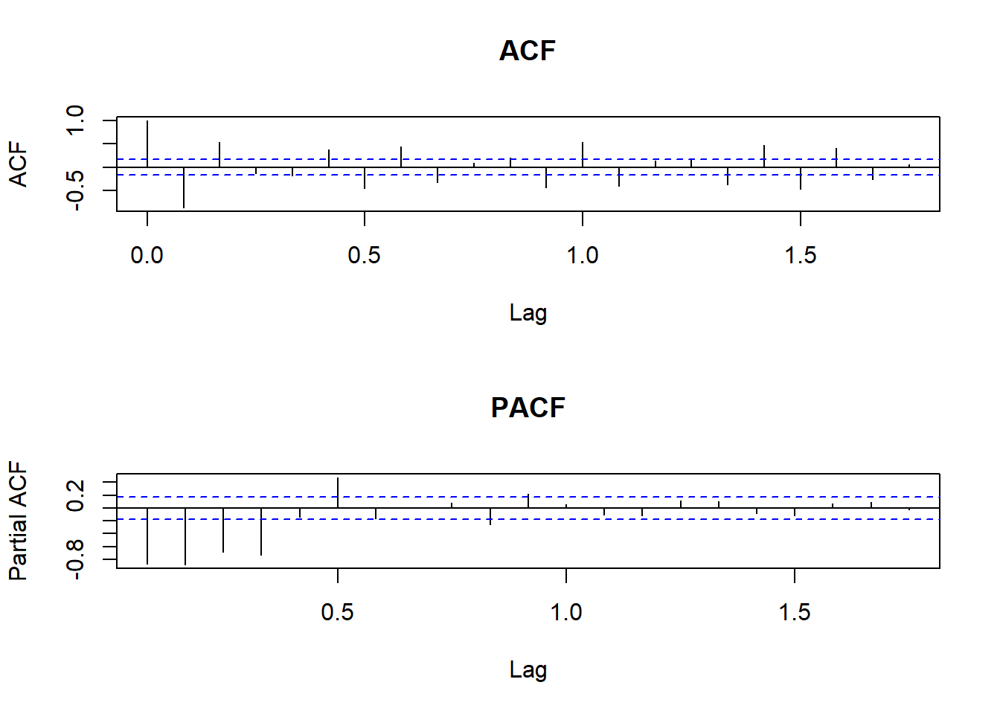
auto.arima(log_diff12_air) # 자동으로 차수및 모수결정
## Series: log_diff12_air
## ARIMA(1,0,0)(2,0,0)[12] with zero mean
##
## Coefficients:
## ar1 sar1 sar2
## -0.9221 0.5517 0.2955
## s.e. 0.0294 0.0943 0.1040
##
## sigma^2 estimated as 1122: log likelihood=-652.39
## AIC=1312.78 AICc=1313.1 BIC=1324.28
tsdiag(auto.arima(diff(logair)))
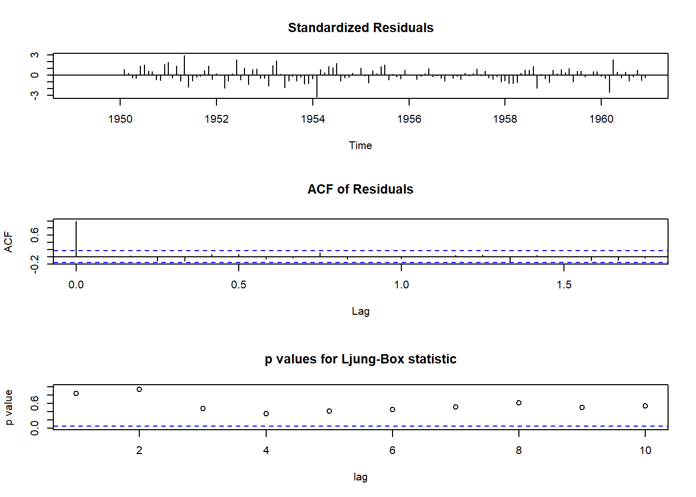
arm<-arima(logair,c(0,1,1), seasonal=list(order=c(0,1,1),period=12))
arm
##
## Call:
## arima(x = logair, order = c(0, 1, 1), seasonal = list(order = c(0, 1, 1), period = 12))
##
## Coefficients:
## ma1 sma1
## -0.4018 -0.5569
## s.e. 0.0896 0.0731
##
## sigma^2 estimated as 0.001348: log likelihood = 244.7, aic = -483.4
tsdiag(arm)
pred<-predict(arm, n.ahead=10*12)
pred
## $pred
## Jan Feb Mar Apr May Jun Jul Aug
## 1961 6.110186 6.053775 6.171715 6.199300 6.232556 6.368779 6.507294 6.502906
## 1962 6.206435 6.150025 6.267964 6.295550 6.328805 6.465028 6.603543 6.599156
## 1963 6.302684 6.246274 6.364213 6.391799 6.425054 6.561277 6.699792 6.695405
## 1964 6.398933 6.342523 6.460463 6.488048 6.521304 6.657526 6.796042 6.791654
## 1965 6.495183 6.438772 6.556712 6.584297 6.617553 6.753776 6.892291 6.887903
## 1966 6.591432 6.535022 6.652961 6.680547 6.713802 6.850025 6.988540 6.984153
## 1967 6.687681 6.631271 6.749210 6.776796 6.810051 6.946274 7.084789 7.080402
## 1968 6.783930 6.727520 6.845460 6.873045 6.906301 7.042523 7.181039 7.176651
## 1969 6.880180 6.823769 6.941709 6.969294 7.002550 7.138773 7.277288 7.272900
## 1970 6.976429 6.920019 7.037958 7.065544 7.098799 7.235022 7.373537 7.369150
## Sep Oct Nov Dec
## 1961 6.324698 6.209008 6.063487 6.168025
## 1962 6.420947 6.305257 6.159737 6.264274
## 1963 6.517197 6.401507 6.255986 6.360523
## 1964 6.613446 6.497756 6.352235 6.456773
## 1965 6.709695 6.594005 6.448484 6.553022
## 1966 6.805944 6.690254 6.544734 6.649271
## 1967 6.902194 6.786504 6.640983 6.745520
## 1968 6.998443 6.882753 6.737232 6.841770
## 1969 7.094692 6.979002 6.833481 6.938019
## 1970 7.190941 7.075251 6.929731 7.034268
##
## $se
## Jan Feb Mar Apr May Jun
## 1961 0.03671562 0.04278291 0.04809072 0.05286830 0.05724856 0.06131670
## 1962 0.09008475 0.09549708 0.10061869 0.10549195 0.11014981 0.11461854
## 1963 0.14650643 0.15224985 0.15778435 0.16313118 0.16830825 0.17333075
## 1964 0.20896657 0.21513653 0.22113442 0.22697386 0.23266679 0.23822371
## 1965 0.27748210 0.28408309 0.29053414 0.29684503 0.30302451 0.30908048
## 1966 0.35174476 0.35876289 0.36564634 0.37240257 0.37903840 0.38556004
## 1967 0.43142043 0.43883816 0.44613258 0.45330963 0.46037481 0.46733319
## 1968 0.51620376 0.52400376 0.53168935 0.53926541 0.54673651 0.55410688
## 1969 0.60582584 0.61399203 0.62205103 0.63000694 0.63786363 0.64562471
## 1970 0.70005133 0.70856907 0.71698563 0.72530453 0.73352910 0.74166246
## Jul Aug Sep Oct Nov Dec
## 1961 0.06513124 0.06873441 0.07215787 0.07542612 0.07855851 0.08157070
## 1962 0.11891946 0.12307018 0.12708540 0.13097758 0.13475740 0.13843405
## 1963 0.17821177 0.18296261 0.18759318 0.19211216 0.19652727 0.20084534
## 1964 0.24365393 0.24896574 0.25416656 0.25926308 0.26426132 0.26916676
## 1965 0.31502004 0.32084967 0.32657525 0.33220217 0.33773535 0.34317933
## 1966 0.39197318 0.39828307 0.40449455 0.41061207 0.41663978 0.42258152
## 1967 0.47418947 0.48094803 0.48761291 0.49418791 0.50067658 0.50708223
## 1968 0.56138049 0.56856106 0.57565206 0.58265678 0.58957827 0.59641945
## 1969 0.65329361 0.66087351 0.66836746 0.67577831 0.68310877 0.69036139
## 1970 0.74970759 0.75766731 0.76554426 0.77334099 0.78105989 0.78870326
zz <- ts.plot(AirPassengers, 2.718^pred$pred, lty=c(1,3))
zz
## NULL
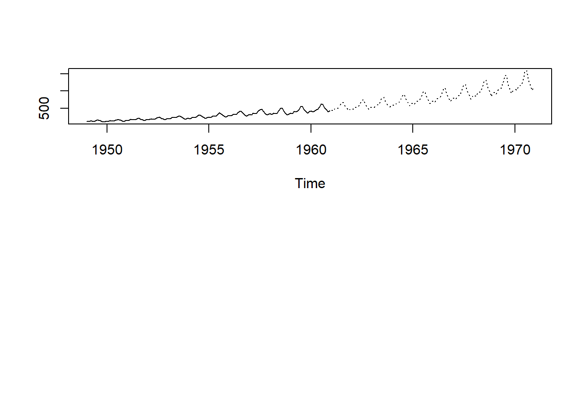